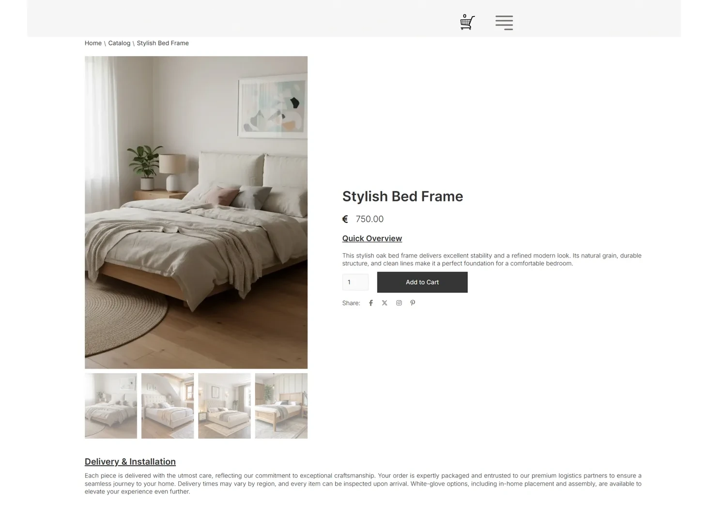
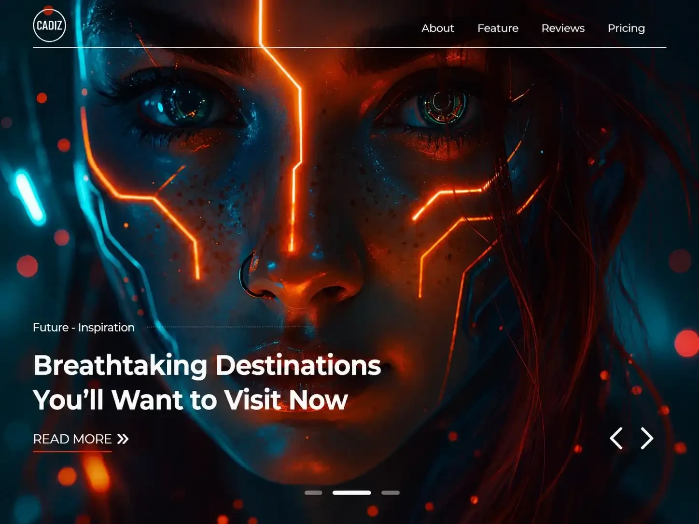

Selected work

Maison d’Art
Furniture manufacturing website
Furniture collections presented clearly, with content you can update in Webflow.
WebflowContent updates
I build in Webflow and connect the work behind it with AI agents and Telegram bots.
Design into
development
Purpose-built
assistants
Bots that get things
done

Furniture manufacturing website
Furniture collections presented clearly, with content you can update in Webflow.

Product sliders and considered motion that help visitors explore your offer.
Explore the interaction studyHelp customers understand your offer and get in touch. Make the work behind each enquiry easier to manage.
Find your starting pointA responsive website that presents your services or products clearly, with content you can update in Webflow.
Help your team answer recurring questions, organise enquiries and find information across the tools you already use.
A simpler way for customers and your team to get updates, submit requests and trigger everyday workflows.
A new enquiry can become a clear brief,
ready for the next useful action.
“I need a website to showcase our furniture and receive enquiries.”
The agent pulls out the website goal and key requirements. Your team receives a structured enquiry to review.
A new brief is ready to review.
Built around your process, your tools and the decisions you want to keep.
Map your workflowUnderstand the task. Build with care.
Make the handover straightforward.
We clarify your business goals, customers and workflow. You get an agreed scope and a clear direction.
I share progress, develop the website or automation, and refine the details with your feedback.
We check the key journeys, responsive layouts and integrations before the final handover.
Workroom is my independent practice for Webflow development, AI agents and Telegram bots.
I care about clean structure, responsive layouts and interactions that feel right. The same attention goes into how information moves, what gets automated and where you stay in control.
Meet me on UpworkHave something else in mind?
Let’s talk about it.
Yes. We can start with a Webflow website that presents your business clearly. AI agents and Telegram bots can be added when they solve a specific task.
Useful starting points include knowledge assistants and structured enquiry handling. We can define the task around the information and tools you already use.
We can plan a workflow that connects website enquiries, notifications and bot actions through the APIs your tools support.
Yes. I turn Figma designs into responsive Webflow websites, with CMS, custom code and animations where the project needs them.
Send your goals, current website or design, and the main task you want to solve through Upwork.